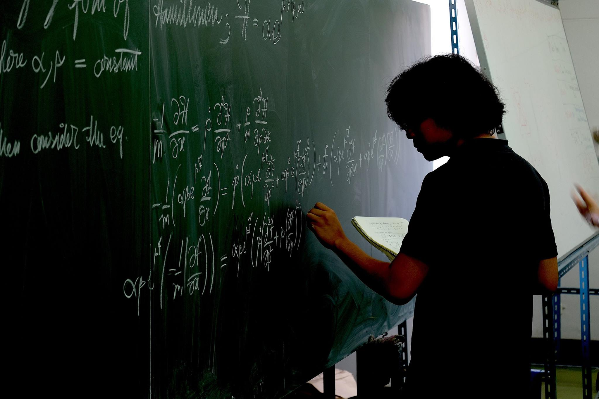

Kittapat
A mathematics enthusiast, especially in geometric analysis.
Interested topics: Archaeology, Historiography, Logic/set/model/proof theories
Github:
Here it is! , E-mail: kittapat.rat@mail.kmutt.ac.th
Current status
Undergraduate student at King Mongkut's University of Technology Thonburi, Bangkok, Thailand in BSc Health Data Science
Doing some mathematics intensively Click here to see full description of mathematics courses.
Advanced Courses on Mathematics
What I've learnt about
Topics
Date
Resources
Mathematical Physics: non-uniqueness property of Hamitonian in one-degree of freedom
Feb 2018
ArXiv , doc
Backtracking algorithm: N-queen problem in general NxN chessboard
April 2019
GitHub
Thai standard curriculum: possibility to do interdisciplinary teaching by investigating it with Natural Language Processing techniques
Jan 2020
GitHub
Hough transformation and Canny Edge Detector: Lane line detection
May 2020
GitHub
Application of Pseudo-Riemannian Manifold: General Relativity
Jul 2021
Doc
Implementation of Numerical Methods Algorithms
Aug 2021
Doc
Guest Lecturer: Discrete Fourier Transform
Nov 2021
Presentation
Boundary Value Problem: Numerical Methods on Heat Transfer
Dec 2021
Doc
Plant Systems Biology: Cassava Metabolic Pathway Analysis
Ongoing
YouTube
Things that I want to do also
Graphic design
Typography as font foundry
Data analysis
Political science, humanities, political philosophy
Interested topics that I mentioned above
* This image was taken by my beloved advisor, Sikarin Yoo-Kong, in 2018 at
TCP KMUTT lab.
** The documents are mostly from LaTeX which are converted as html via
pdf2htmlEX .
